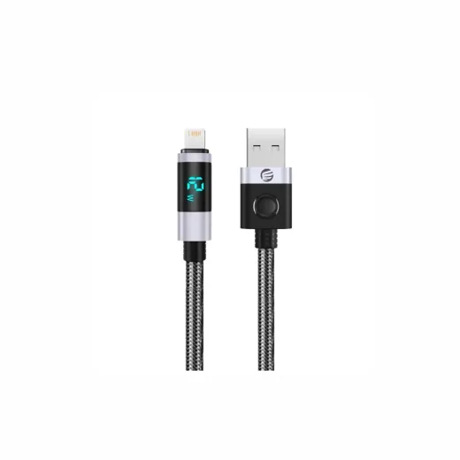
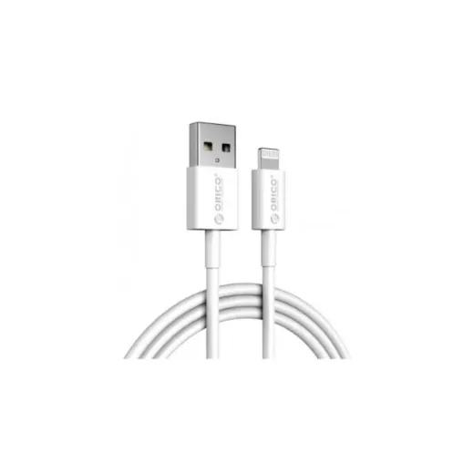
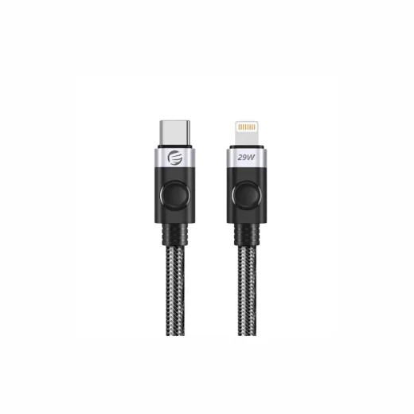
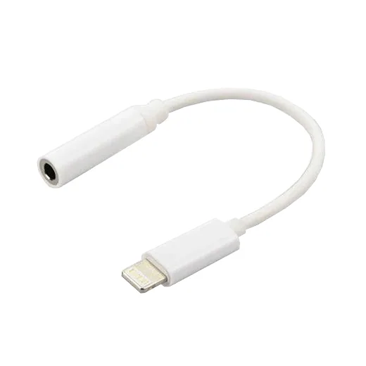
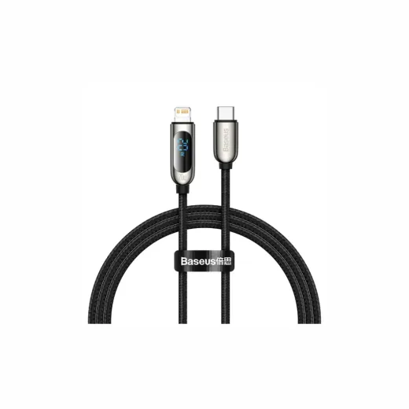
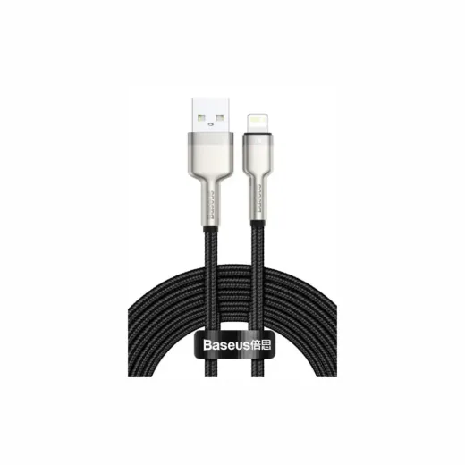
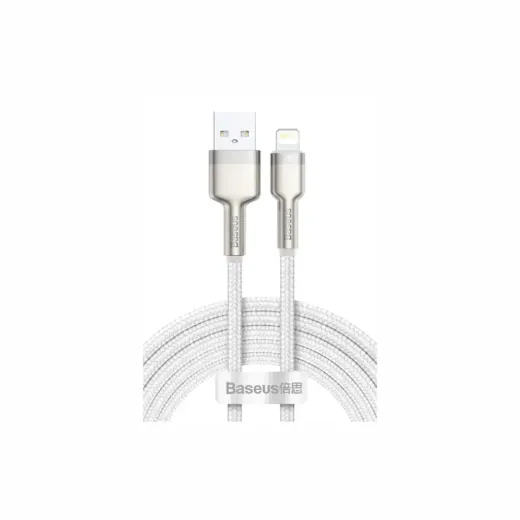
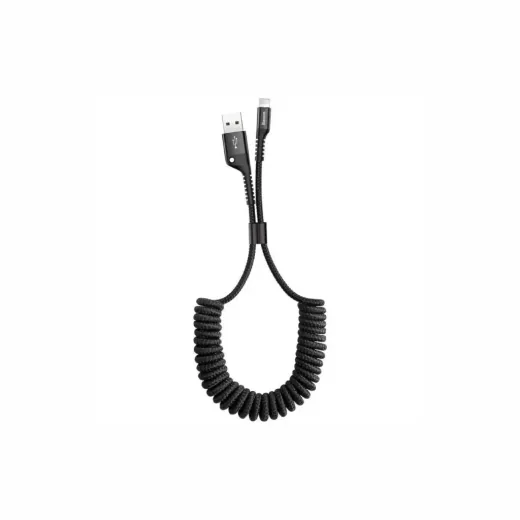
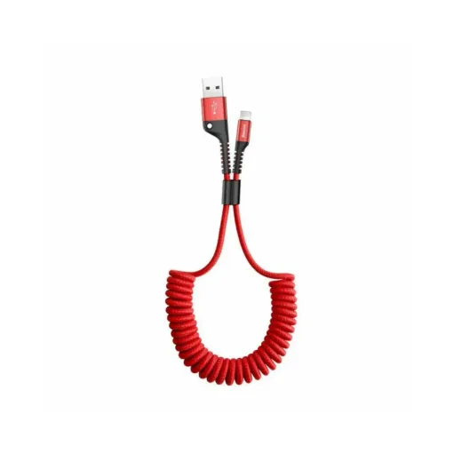

Lightning · Modelo LDA2L20BKBP
Cable USB a Lightning 2 Metro Orico LDA2L-20-BK-BP
L 380.01
En Sycom
Precio en cada tienda
| Tienda | Precio | Antes | Disponibilidad | |
|---|---|---|---|---|
| Sycom | L 380.01 | — | Disponible | Ver en tienda › |
Precios referenciales tomados de cada tienda el 14 de noviembre de 2026. El precio válido es el que muestra la tienda al comprar.
Otros cargadores y cables Lightning

Cable USB a Lightning Orico AL01-10-WH-BPL 350En Sycom
Cable USB-C a Lightning 2 Metro Orico C2L-20-BK-BP 29WL 345En Sycom
Adaptador Lightning Auxiliar 3.5L 292En Elektra
Cable USB-C a Lightning con Pantalla Baseus Display Fast CATLSK-A01 NegroL 480En Sycom
Cable USB a Lightning Baseus Cafule Series CALJK-B01 NegroL 230En Sycom
Cable USB a Lightning Baseus Cafule Series Metal CALJK-B02 2m BlancoL 230En Sycom
Cable USB a Lightning Baseus CALSR-01 Negro EspiralL 230En Sycom
Cable USB a Lightning Baseus CALSR-09 Rojo EspiralL 230En Sycom